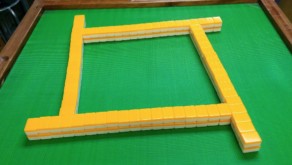
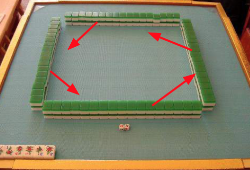
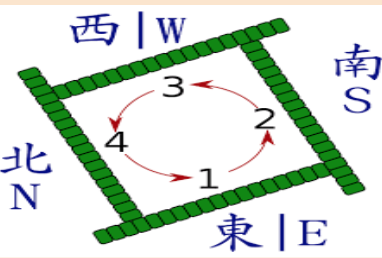

In this guide I will teach you how to Setup the game of Mahjong
SETTING UP:
Now collect the wind tiles, place them face down and shuffle them. Then each player picks a tile to determine where they will sit. Then throw the dice to determine the dealer with the highest number
Next place all tiles face down and shuffle

Make 4 walls 17 tiles wide, 2 tiles high (34 tiles in total
Now throw both dice and count that many times going anti-clockwise and now the wall you ended up at will become the dead wall
To create the dead wall count that same number you got when you threw the dice starting from the right side and split the wall.

Remember when we said when stealing to complete a quad you must draw an extra tiles to balance out your tiles, this extra tile must be drawn from the dead wall
Now each player starting from the east player will start collecting their starting tiles from the other walls. You start from the wall after the dead wall clock wise, and you collect 4 tiles at a time until each player has 12 tiles then pick one each to make it 13. (when picking single tiles always start with the top tile and then the one below it before moving on )

Now before beginning there is one last thing. Whoever is facing the dead wall, counts three tiles from the left of the dead wall and flips that third tile face up. This tile is now called Dora. Remember when we mentioned that each method of winning gives you points in the form of “han” which gets converted to points in the end. Well the dora tile gives you an extra “Han” if you have the tile that comes after it within your winning combinations.
When it comes to the honor tiles which aren’t numbered this is their order

If the dora is the last tile, then you start back from the first tile. For example if the dora tile is the 9 of bamboo, you will need the 1 of bamboo to get an extra “han”
Now east begins the game and draws a tile and then discards one in front of him and then south, west and then north last, and the game now begins.
This guide has enough information to know basics in order to be able to begin playing, and now head over to calculating section to quickly learn how to calculate points at the end of each round